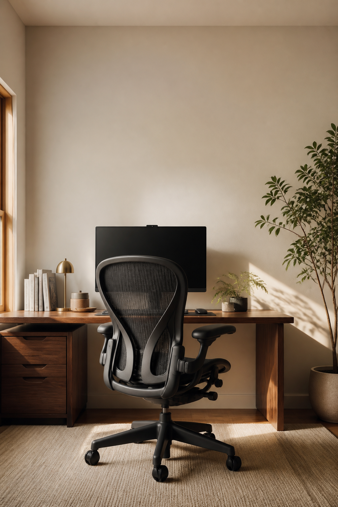

Desk Atlas pick
Ergonomics · All-day seating
Herman Miller Aeron listings
For the desk that needs a true ergonomic foundation. Browse current Amazon listings to compare available options.
Browse on AmazonThe Desk Atlas product edit
Start with a real point of friction—not a product category. This is a short, considered edit for a calmer and more capable desk.
Some links are affiliate links. If you buy through them, Desk Atlas may earn a commission at no extra cost to you.

Shop by need
Every pick here serves a clear role: sit more comfortably, clear the surface, improve the light, or make cables disappear.
Ergonomics · All-day seating
For the desk that needs a true ergonomic foundation. Browse current Amazon listings to compare available options.
Browse on AmazonErgonomics · Monitor arm
A more flexible screen position can create useful depth on a compact desk and help put the display at a more comfortable height.
View on AmazonOrganization · Desk shelf
Raises a display while giving small daily tools a more intentional home underneath.
View on AmazonOrganization · Desktop bookshelf
Uses vertical space to keep notebooks, books and small desk tools together instead of spreading them across the work surface.
Best for: compact desks that need open, visible storage. Check the live dimensions and finish before buying.
View on AmazonOrganization · Charging
Keep the daily charging routine in one place instead of distributing cables across the desk.
View on AmazonLighting · Screen light
Add focused light to the work surface without giving up valuable desk space to a lamp base.
View on AmazonCable management · Under desk
A simple first move when cables are the visual noise you notice at the start of every workday.
View on AmazonNeed more context?
The full guide explains the benefit, tradeoff and fit of each recommendation—so you can buy less, but choose better.